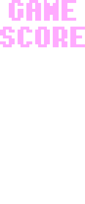

Pac-Man
Играбельным персонажем в игре служит жёлтое шарообразное существо —
Pac-Man.
На самом деле главный герой одноименной игры является обычным
студентом по обмену, у которого довольно мало денег, из-за чего
питается он чем попало. Чаще всего он питается печеньками, но иногда
может позволить себе выпечку покрупнее.
У Pac-Man также есть
матушка, которая присылает ему различные ягоды из своего поселка,
такие как: вишня, клубника, яблоки и апельсины.
Однако не все
так просто в жизни юного студента. Он бы так и продолжал спокойно
утопать в своем обжорстве из вредной пищи, если бы не голоса в
голове. Уже долгое время его мучают кошмары, будто он находится в
бесконечном лабиринте, из которого не существует выхода. Все желания
осуществилась во снах, но его мучают призраки прошлого, которые
алицетворяют страхи Pac-Man . Пока он ищет выход из лабиринта,
поедая любимую пищу, призраки преследуют его. Бесконечный круговорот
событий, которому нет конца. Сон не может прекратиться, еда никак не
закончится, и страхи все никак не отстанут. Сможет ли он выбраться,
закончаться ли фруктики, победит ли он страхи?